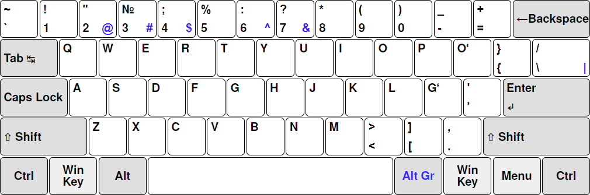
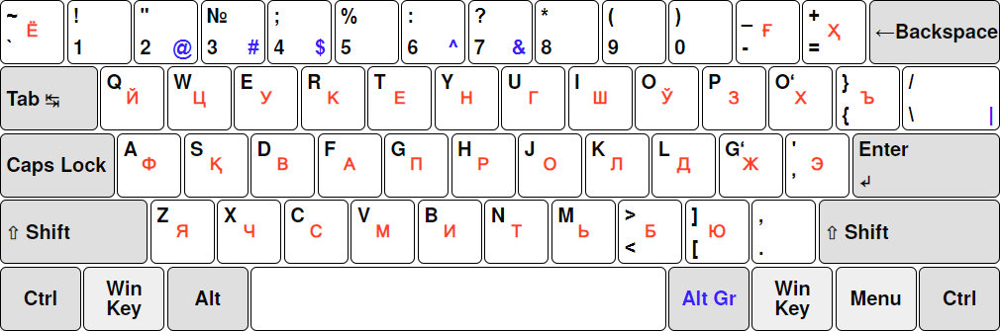

This project provides a complete Uzbek (Latin) keyboard layout for Microsoft Windows.
Windows currently includes a built-in layout for Uzbek Cyrillic, but does not offer an equivalent for the Uzbek Latin alphabet.
This project fills that gap with an official-standard Latin layout that installs system-wide, works in all applications, and behaves consistently with Windows’ existing Uzbek Cyrillic layout.
The layout implements the standard Uzbek Latin alphabet without deviations or substitutions.
In particular, the letters Oʻ, Gʻ, and the modifier letter ʼ use the correct Unicode characters:
| Letter | Unicode | Notes |
|---|---|---|
| Oʻ | U+004F + U+02BB | O with modifier letter turned comma |
| Gʻ | U+0047 + U+02BB | G with modifier letter turned comma |
| ʼ | U+02BC | Modifier letter apostrophe |
These ensure correct search behavior, collation, and text compatibility.
All non-letter keys (digits, punctuation, symbols) follow the placement of the built-in Uzbek Cyrillic layout as closely as possible.
Any ASCII characters that do not exist in the Cyrillic layout are placed on:
The layout is built with Microsoft Keyboard Layout Creator (MSKLC) and includes:
EXE installer .KLC source fileTwo diagrams are included:
All images are in .webp format for clarity and small file size.
The latest release is available under GitHub Releases:
Use the .exe installer.
The layout is stable and feature-complete, so the current release is expected to remain final.
setup.exe. The layout will now be available system-wide.
diagrams/
uzbek-latin.webp # Main layout diagram
dual-labeled.webp # Latin + Cyrillic comparison diagram
src/
uzlatn.klc # Keyboard Layout Creator source file
uzlatn/
setup.exe # Install executable
uzLatn_amd64.msi
uzLatn_i386.msi
uzLatn_ia64.msi
amd64/
uzLatn.dll
i386/
uzLatn.dll
ia64/
uzLatn.dll
wow64/
uzLatn.dll
AltGr.This project is released under the MIT License.
This layout is considered complete, but suggestions and issues are welcome.
If you notice a character placement problem, feel free to open an issue.

Windows users working in Uzbek often switch between:
This project provides a formal, MSKLC-based, Unicode-correct implementation of the Latin alphabet that: